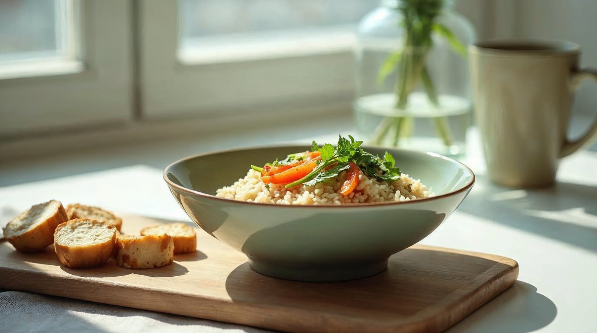
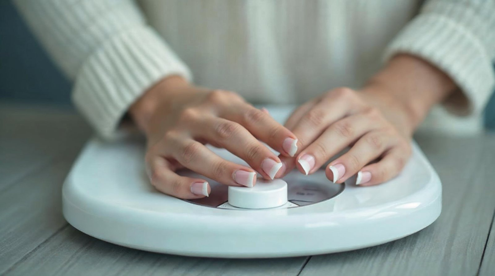
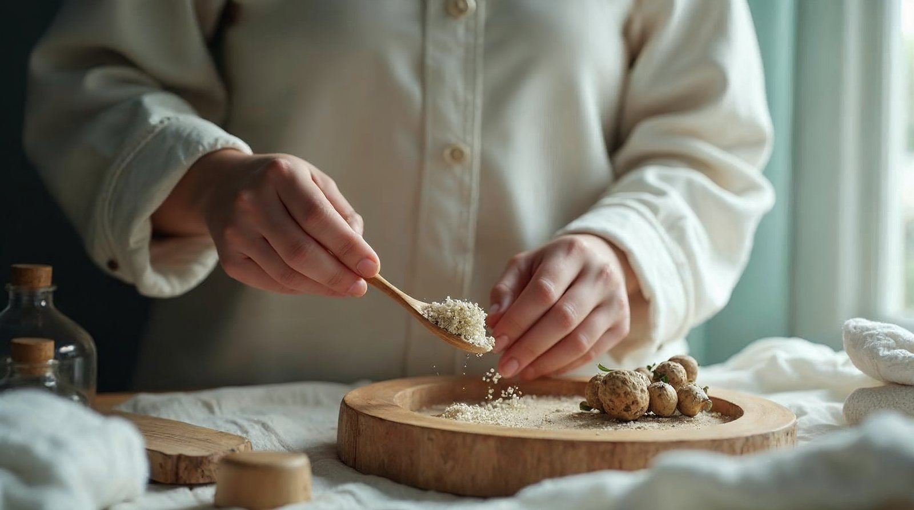
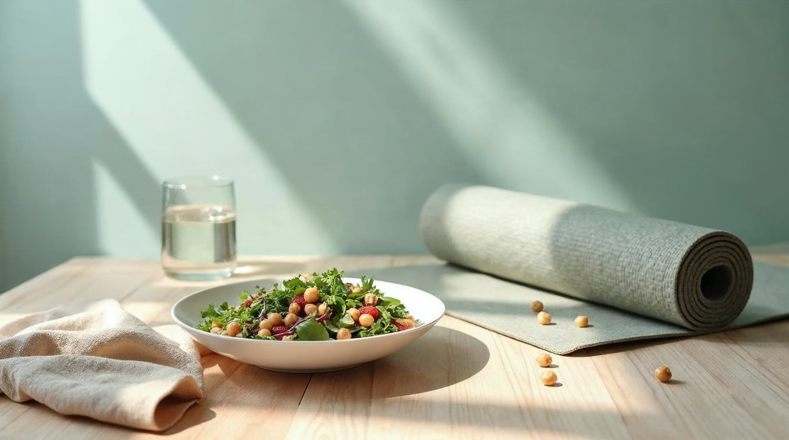
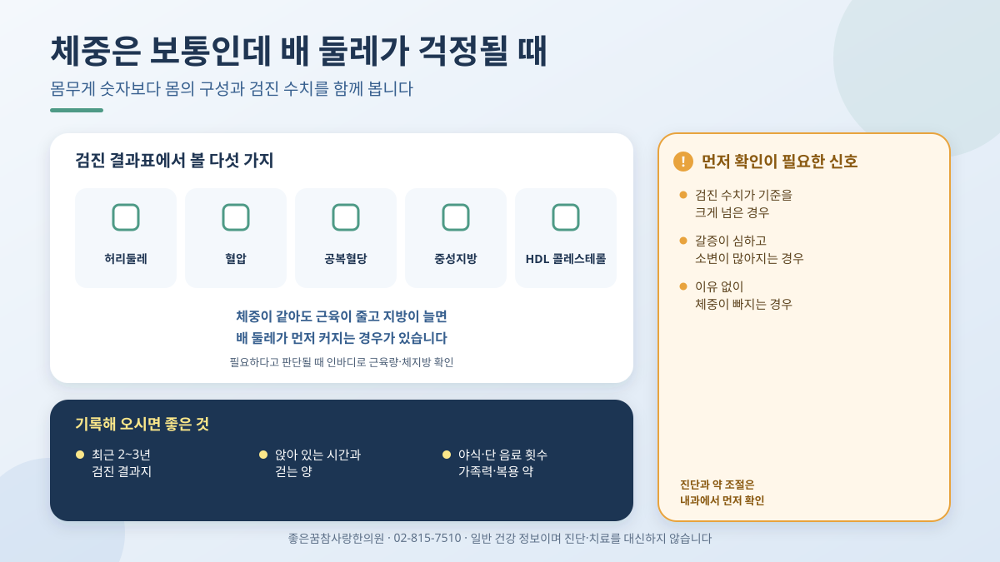

이종호 한의사 감수좋은꿈참사랑한의원 대표원장 (한의사 면허번호 19769)발행 2026-11-22 · 수정 2026-11-26
이 글의 차례
- 정상 체중 비만은 무엇을 말하나요
- 왜 이런 불편이 생길 수 있나요
- 왜 체중보다 몸의 구성을 볼까요
- 먼저 이렇게 여쭙니다
- 확인해 볼 것
- 허리둘레는 어떻게 재나요
- 검진 결과지에서는 이 숫자를 봅니다
- 인바디로는 무엇을 함께 보나요
- 식사 순서와 구성은 어떻게 바꿀까요
- 잠과 스트레스도 배 둘레와 이어집니다
- 일상에서 먼저 해 볼 수 있는 것
- 걷기는 얼마나 하면 될까요
- 근력 운동은 어떻게 시작할까요
- 가족력이 있다면 무엇을 더 살필까요
- 상황별 예시
- 스스로 점검해 보세요
- 한의원에서 함께 살필 수 있는 경우
- 이렇게 기록해 오시면 상담이 쉬워집니다
- 얼마나 지켜보고 언제 상담할까요
- 이런 증상은 먼저 확인이 필요합니다
- 관련 글
체중이 정상이어도 배 둘레와 검진 수치는 따로 확인해 볼 필요가 있습니다. 몸무게는 보통인데 배만 나오고 검진 수치가 걸리는 분이 있습니다. 체중 한 가지만으로 건강 상태를 판단하기는 어려워서 여러 지표를 함께 봅니다.
체중계 숫자가 몇 년째 그대로라 안심하고 지냈는데, 어느 해 검진에서 허리둘레나 중성지방에 표시가 붙어 놀라 오시는 분이 있습니다. 몸무게는 몸 전체의 무게일 뿐, 그 안에서 근육과 지방이 어떻게 나뉘어 있는지는 알려 주지 않습니다. 그래서 저는 체중 옆에 허리둘레와 검진 수치, 몸의 구성을 나란히 놓고 보시길 권합니다.
정상 체중 비만은 무엇을 말하나요
체질량지수(BMI)로 보면 정상 범위인데 체지방 비율이 높거나 배 둘레에 지방이 몰려 있는 상태를 흔히 정상 체중 비만이라고 부릅니다. 겉으로는 마른 편으로 보이기도 해서 본인도 주변도 알아차리기 어렵습니다.
특히 배 안쪽 장기 사이에 쌓이는 지방은 혈당과 지질, 혈압과 함께 움직이는 경우가 많다고 알려져 있습니다. 그래서 체중이 그대로여도 허리둘레가 해마다 조금씩 늘고 있다면 생활을 한 번 돌아볼 신호로 봅니다.
배 둘레가 늘었다고 바로 병이라는 뜻은 아닙니다. 지금의 생활이 몸에 어떤 흔적을 남기고 있는지 알려 주는 표지로 보고, 수치가 더 움직이기 전에 바꿀 수 있는 것부터 찾아보자는 뜻입니다.
왜 이런 불편이 생길 수 있나요
- 몸무게는 같아도 근육이 줄고 지방이 늘면 배 둘레가 먼저 커지는 경우가 있고, 나이가 들수록 이런 변화가 생기기 쉽습니다.
- 앉아 있는 시간이 길고 움직임이 적으면 체중 변화 없이도 몸의 구성이 달라지기 쉽습니다.
- 늦은 식사와 야식, 단 음료가 이어지면 배 쪽에 지방이 쌓이기 쉽다고 알려져 있습니다.
- 잠이 부족하면 식욕과 활동량이 함께 흔들려 같은 생활에서도 수치가 달라질 수 있습니다.
왜 체중보다 몸의 구성을 볼까요
같은 몸무게라도 근육이 많은 몸과 지방이 많은 몸은 쓰는 에너지와 버티는 힘이 다릅니다. 근육은 움직이지 않을 때도 에너지를 쓰고, 식사 뒤 혈당을 받아들이는 곳이기도 해서 근육이 줄면 같은 식사에도 몸이 다르게 반응할 수 있습니다.
다이어트를 여러 번 반복하며 굶었다 먹었다 한 경우에도 체중은 돌아왔는데 근육은 줄고 지방이 늘어난 채로 남기 쉽습니다. 그래서 숫자 하나보다 무엇이 줄고 무엇이 늘었는지를 함께 보는 것이 중요합니다.
그래서 목표도 "몇 kg 빼기"보다 "허리둘레 몇 cm 줄이기", "계단 몇 층을 쉬지 않고 오르기"처럼 몸의 구성과 힘에 맞춰 잡아 보시길 권합니다. 체중이 거의 그대로여도 허리둘레가 줄고 몸이 가벼워졌다면 좋은 방향으로 가고 있는 것입니다.

먼저 이렇게 여쭙니다
- 최근 검진에서 허리둘레, 혈압, 혈당, 지질 수치는 어땠나요?
- 앉아 있는 시간이 길고 운동은 얼마나 하나요?
- 식사는 불규칙하거나 야식이 잦은 편인가요?
- 가족 중 당뇨나 고혈압이 있나요?
- 단 음료나 술은 일주일에 얼마나 드시나요?

확인해 볼 것
- 허리둘레(검진 결과표에 적힌 값)
- 공복혈당, 중성지방, HDL 콜레스테롤, 혈압
- 근력 운동을 하고 있는지 여부
- 수면 시간과 식사 시간
- 필요하다고 판단될 때 인바디로 근육량과 체지방을 함께 확인하기
- 최근 몇 년 사이 바지 허리 치수가 달라졌는지
- 계단을 오를 때 숨이 차거나 다리가 무거운 정도
허리둘레는 어떻게 재나요
- 아침에 일어나 화장실을 다녀온 뒤, 식사 전에 잽니다.
- 똑바로 서서 숨을 편하게 내쉰 상태에서, 갈비뼈 가장 아래와 골반 위쪽 뼈 사이의 가운데를 줄자로 한 바퀴 잽니다.
- 줄자가 바닥과 나란하게 수평이 되도록 하고, 살을 조이지 않을 만큼만 감습니다.
- 배에 힘을 주거나 집어넣지 않습니다. 평소 모습 그대로 재야 비교가 됩니다.
- 2~4주에 한 번, 같은 시간과 같은 방법으로 재어 기록합니다.
날마다 재면 하루 사이의 작은 오르내림에 마음이 흔들리기 쉽습니다. 몇 주 간격으로 재어 흐름을 보는 쪽을 권합니다.
검진 결과지에서는 이 숫자를 봅니다
국내 검진에서 대사증후군을 볼 때 흔히 쓰는 항목은 다섯 가지입니다. 결과지에 적힌 참고 범위와 함께 보시면 됩니다.
- 허리둘레: 남성 90cm, 여성 85cm 이상
- 혈압: 130/85mmHg 이상이거나 혈압약을 드시는 경우
- 공복혈당: 100mg/dL 이상이거나 당뇨약을 드시는 경우
- 중성지방: 150mg/dL 이상
- HDL 콜레스테롤: 남성 40mg/dL, 여성 50mg/dL 미만
다섯 가지 가운데 세 가지 이상이 해당하면 대사증후군으로 봅니다. 한두 가지만 걸려도 몇 해 전과 비교해 같은 방향으로 움직이고 있다면 생활을 바꿔 볼 때입니다. 진단과 약 조절은 내과에서 받으시고, 생활에서 바꿀 것은 함께 정해 볼 수 있습니다.
인바디로는 무엇을 함께 보나요
필요하다고 판단될 때 재는 인바디는 몸무게를 근육량, 체지방량, 체수분 같은 항목으로 나눠 보여 줍니다. 체중이 정상인 분이라도 근육량이 적고 체지방 비율이 높게 나오면, 체중보다 몸의 구성을 바꾸는 쪽으로 생활 계획을 세웁니다.
다만 인바디 숫자는 측정 시각, 식사와 물 마신 양, 운동 직후인지에 따라 조금씩 달라집니다. 그래서 한 번의 숫자로 단정하기보다 비슷한 조건에서 몇 달 간격으로 다시 재어 흐름을 봅니다. 검진 결과지, 허리둘레 기록과 함께 놓고 보면 각각의 숫자가 무엇을 말하는지 이해하기가 쉬워집니다.
식사 순서와 구성은 어떻게 바꿀까요
먹는 양을 갑자기 크게 줄이면 오래 버티기 어렵고 근육까지 함께 줄기 쉽습니다. 저는 양보다 순서와 구성을 먼저 바꿔 보시길 권합니다.
- 채소 반찬이나 나물을 먼저 몇 젓가락 먹고, 그다음 단백질 반찬, 밥은 마지막에 먹습니다.
- 끼니마다 손바닥 크기쯤의 단백질 반찬(생선, 두부, 달걀, 살코기)을 곁들입니다.
- 흰밥만 먹기보다 잡곡을 조금 섞으면 씹는 시간이 늘어 천천히 먹게 됩니다.
- 면이나 빵으로만 끼니를 때우는 날이 잦다면 일주일 횟수를 정해 줄여 봅니다.
- 식사 시간은 20분 이상으로 잡고, 화면을 보며 먹는 습관은 줄입니다.
잠과 스트레스도 배 둘레와 이어집니다
잠이 부족한 날이 이어지면 다음 날 단 음식과 기름진 음식이 당기고, 피곤해서 덜 움직이게 됩니다. 이런 날이 쌓이면 식사량이 크게 늘지 않아도 배 둘레가 조금씩 늘 수 있습니다.
오랜 긴장과 스트레스도 식사 시간을 흐트러뜨리고 늦은 밤 간식으로 이어지기 쉽습니다. 그래서 진료실에서는 식사와 운동만이 아니라 잠든 시각과 요즘의 긴장도 함께 여쭙습니다. 잠이 먼저 안정되어야 식사와 운동 계획도 지키기 쉬워지는 경우가 많습니다.
일상에서 먼저 해 볼 수 있는 것
- 한 시간에 한 번은 일어나 2~3분 걷거나 계단을 오르기
- 저녁 식사는 잠들기 3시간 전에 마치고, 야식은 일주일 횟수를 정해 줄여 보기
- 단 음료와 과일 주스는 물이나 보리차로 바꾸기
- 끼니마다 밥 양을 조금 줄이고, 단백질 반찬과 채소를 먼저 먹기
- 걷기에 더해 일주일에 두세 번 가벼운 근력 운동 넣기
- 술은 마시는 날과 양을 미리 정해 두기
- 잠드는 시각을 일정하게 하고, 하루 7시간 안팎 자도록 애써 보기
걷기는 얼마나 하면 될까요
처음부터 하루 만 보를 목표로 잡으면 며칠 만에 지치기 쉽습니다. 휴대전화 걸음 수로 지금 하루 몇 걸음을 걷는지 일주일쯤 먼저 확인하고, 거기에 하루 1,000~2,000보를 더하는 것부터 시작해 보세요.
따로 시간을 내기 어렵다면 출퇴근길에 한 정거장 먼저 내리기, 가까운 층은 계단으로 걸어 오르기, 점심 뒤 10분 걷기처럼 하루 일과에 끼워 넣는 방법이 오래 갑니다. 숨이 조금 차지만 옆 사람과 이야기는 나눌 수 있는 빠르기가 알맞습니다.
걷기는 몸무게보다 혈당과 기분, 잠에 먼저 반응이 오는 경우가 많습니다. 숫자 변화가 더디더라도 몸이 가벼워지는 느낌을 함께 적어 두면 이어 가는 힘이 됩니다.
근력 운동은 어떻게 시작할까요
운동을 오래 쉬었다면 헬스장에 가지 않아도 집에서 맨몸으로 시작할 수 있습니다. 중요한 것은 강도보다 꾸준함입니다.
- 의자에 앉았다 일어나기: 팔짱을 끼고 천천히 10회, 두 번
- 벽 짚고 팔굽혀펴기: 벽에서 한 걸음 떨어져 10회, 두 번
- 누워서 엉덩이 들기: 무릎을 세우고 천천히 10회, 두 번
- 까치발 들기: 벽을 짚고 10~15회
다음 날 근육이 조금 뻐근한 정도는 괜찮지만, 관절이 아프거나 하루 넘게 불편하면 횟수를 줄입니다. 2주쯤 지나 수월해지면 횟수를 조금씩 늘려 봅니다.
가족력이 있다면 무엇을 더 살필까요
부모나 형제 가운데 당뇨, 고혈압, 이상지질혈증이 있다면 체중이 정상이어도 같은 수치가 일찍 움직일 수 있습니다. 가족력은 바꿀 수 없지만, 그만큼 검진 결과를 해마다 꼼꼼히 비교하고 생활을 조금 일찍 챙길 이유가 됩니다.
진료 때 가족 가운데 누가 어떤 병을 몇 살쯤 진단받았는지 대략 알려 주시면 도움이 됩니다. 검진을 몇 해 거르셨다면 생활을 바꾸는 것과 함께 다음 검진 일정부터 먼저 잡아 두시길 권합니다.
상황별 예시
- 예를 들어 하루 열 시간 넘게 앉아 일하고 퇴근 뒤에는 소파에서 쉬는 사무직이라면, 체중은 그대로여도 다리와 엉덩이 근육이 줄기 쉽습니다. 점심 뒤 10분 걷기와 저녁 의자 운동부터 시작해 봅니다.
- 예를 들어 끼니를 자주 거르다 밤에 몰아 먹는 경우라면, 하루 섭취량이 많지 않아도 배 둘레가 늘 수 있습니다. 아침을 간단히라도 챙기고 저녁을 조금 앞당겨 봅니다.
- 예를 들어 폐경 전후로 체중은 비슷한데 바지 허리가 끼기 시작했다면, 몸의 변화로 배 쪽에 지방이 붙기 쉬운 시기일 수 있습니다. 근력 운동을 일찍 시작하고 허리둘레를 기록해 봅니다.
- 예를 들어 회식이 잦아 일주일에 서너 번 늦은 시간에 술과 안주를 먹는 직장인이라면, 회식 다음 날 아침은 거르지 말고 가볍게 먹고, 회식 자리에서는 안주를 단백질과 채소 위주로 골라 봅니다.
스스로 점검해 보세요
- 몇 년 사이 체중은 그대로인데 바지 허리가 끼기 시작했다
- 계단을 오르면 예전보다 숨이 차고 다리가 무겁다
- 일주일에 근력 운동을 거의 하지 않는다
- 하루 대부분을 앉아서 보낸다
- 야식이나 단 음료를 일주일에 세 번 넘게 먹는다
- 가족 중 당뇨나 고혈압이 있는 사람이 있다
여러 항목에 해당한다면 체중계보다 줄자와 검진 결과지를 먼저 꺼내 보세요. 지금 숫자를 적어 두는 것이 변화를 확인하는 첫 기준이 됩니다.

한의원에서 함께 살필 수 있는 경우
- 체중은 정상인데 몸이 무겁고 쉽게 지치는 경우 몸의 구성과 생활 습관을 함께 살핍니다.
- 검진 수치가 애매해 걱정되는 경우 생활 리듬을 함께 살핍니다.
- 운동을 해도 몸이 가벼워지지 않는 경우 식사와 움직임을 함께 살핍니다.
- 다이어트를 해도 배 둘레만 줄지 않는 경우 식사 시간과 잠, 활동량을 함께 살핍니다.
좋은꿈참사랑한의원에서는 먼저 식사와 잠, 활동량을 충분히 듣고 맥을 짚은 뒤, 검진 결과지가 있으면 함께 읽으며 필요하다고 판단될 때 인바디로 몸의 구성을 확인합니다. 그 뒤 생활 계획과 한약 상담 등 맞는 방법을 함께 정하고, 진단이나 약 조절이 필요하면 내과 진료를 안내합니다.

이렇게 기록해 오시면 상담이 쉬워집니다
- 최근 2~3년 검진 결과지(허리둘레, 혈압, 공복혈당, 중성지방, HDL 콜레스테롤)
- 하루 앉아 있는 시간과 걷는 양
- 식사 시간과 야식·단 음료 횟수
- 가족력과 복용 중인 약
- 허리둘레를 같은 시각, 같은 자리에서 잰 기록
- 하루 잠든 시각과 일어난 시각
- 예전에 해 본 다이어트 방법과 그 뒤 체중의 변화
- 인바디를 잰 적이 있다면 그 결과지
얼마나 지켜보고 언제 상담할까요
- 생활을 바꾼 뒤 2~3개월은 허리둘레와 몸의 느낌을 기록하며 지켜봅니다. 몸의 구성은 몇 주보다 몇 달 단위로 달라집니다.
- 다음 검진이나 내과 재검에서 수치가 어떻게 움직였는지 함께 확인합니다.
- 혼자 해 보는 데 막막하거나, 식사와 잠이 함께 흐트러져 어디서부터 바꿔야 할지 모르겠다면 상담을 받아 보세요.
이런 증상은 먼저 확인이 필요합니다
- 검진 수치가 기준을 크게 넘은 경우
- 갈증이 심하고 소변이 많아지는 경우
이런 신호가 있으면 한의원보다 가까운 병원이나 응급실을 먼저 찾으세요.
관련 글

여쭙는 것
- 최근 검진에서 허리둘레, 혈압, 혈당, 지질 수치는 어땠나요?
- 앉아 있는 시간이 길고 운동은 얼마나 하나요?
- 식사는 불규칙하거나 야식이 잦은 편인가요?
생활에서 해 볼 것
- 한 시간에 한 번은 일어나 2~3분 걷거나 계단을 오르기
- 저녁 식사는 잠들기 3시간 전에 마치고, 야식은 일주일 횟수를 정해 줄여 보기
- 단 음료와 과일 주스는 물이나 보리차로 바꾸기
한의원에서 함께 살필 것
- 체중은 정상인데 몸이 무겁고 쉽게 지치는 경우 몸의 구성과 생활 습관을 함께 살핍니다.
- 검진 수치가 애매해 걱정되는 경우 생활 리듬을 함께 살핍니다.
- 운동을 해도 몸이 가벼워지지 않는 경우 식사와 움직임을 함께 살핍니다.
먼저 확인이 필요한 신호
- 검진 수치가 기준을 크게 넘은 경우
- 갈증이 심하고 소변이 많아지는 경우
한눈에 보는 표
| 구분 | 핵심 |
|---|---|
| 여쭙는 것 | 최근 검진에서 허리둘레, 혈압, 혈당, 지질 수치는 어땠나요? 앉아 있는 시간이 길고 운동은 얼마나 하나요? |
| 생활에서 해 볼 것 | 한 시간에 한 번은 일어나 2~3분 걷거나 계단을 오르기 저녁 식사는 잠들기 3시간 전에 마치고, 야식은 일주일 횟수를 정해 줄여 보기 |
| 한의원에서 함께 살필 것 | 체중은 정상인데 몸이 무겁고 쉽게 지치는 경우 몸의 구성과 생활 습관을 함께 살핍니다. 검진 수치가 애매해 걱정되는 경우 생활 리듬을 함께 살핍니다. |
| 먼저 확인이 필요한 신호 | 검진 수치가 기준을 크게 넘은 경우 갈증이 심하고 소변이 많아지는 경우 |
자주 묻는 질문
체중이 정상이면 안심해도 되나요?
배 둘레와 검진 수치도 함께 확인하는 것을 권합니다.
어떤 운동이 좋은가요?
걷기와 가벼운 근력 운동을 상태에 맞게 조금씩 시작하도록 안내합니다.
한의원에서는 무엇을 보나요?
검진 결과를 함께 읽고 식사, 잠, 활동량을 살핍니다.
인바디 검사는 무엇을 알려 주나요?
체수분, 근육량, 체지방처럼 몸의 구성을 숫자로 보여 줘, 체중 숫자만으로는 알기 어려운 변화를 함께 살피는 데 참고합니다.
좋은꿈참사랑한의원은 재진 때 지난번 이야기부터 이어서 여쭙니다. 진료시간과 예약은 오시는 길에서 확인하세요.
어디서 상담받을 수 있나요?
좋은꿈참사랑한의원은 서울 동작구 만양로2길 2 신성빌딩 3층·5층(서울 동작구 상도동, 7호선 상도역 3번 출구 근처)에 있습니다. 한의사 3명(이종호 대표원장, 조영기 수석진료원장, 정원영 진료원장)이 진료합니다. 진료시간은 평일 09:30~20:00(점심 13:00~14:00), 토·일·공휴일 09:30~15:00이며, 방문 전 전화로 확인을 권합니다. 예약은 네이버 예약, 카카오톡 상담, 전화 02-815-7510로 받습니다.
이 글은 일반적인 건강 정보이며 개인의 진단이나 치료를 대신하지 않습니다. 증상이 있거나 복용 중인 약이 있다면 진료를 통해 확인하세요. 치료 효과는 개인마다 다를 수 있습니다.
작성 기준: 일반적으로 알려져 있는 건강 정보를 참고해 정리했습니다(대표원장 감수). 증상 기록은 1~2주 동안 하루 1회, 비슷한 시간에 적어 오시면 지난 상태와 비교하기 쉽습니다.